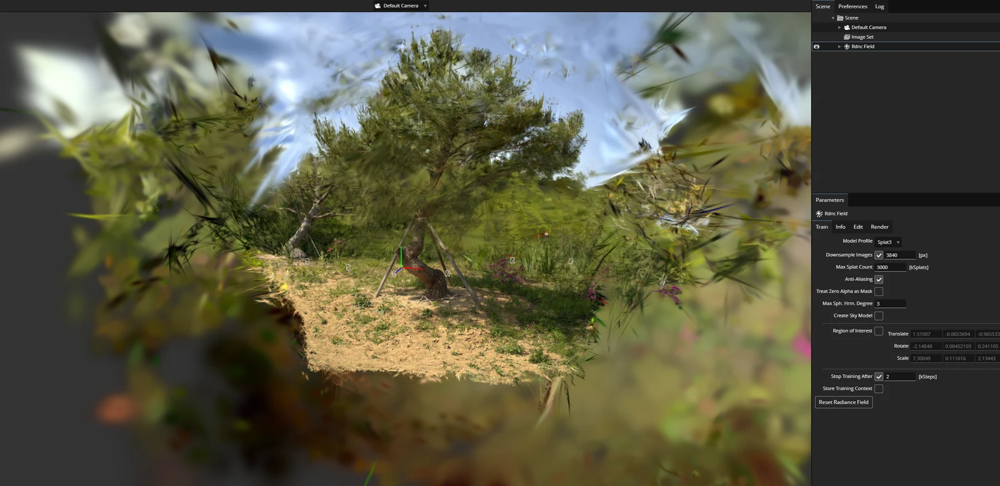
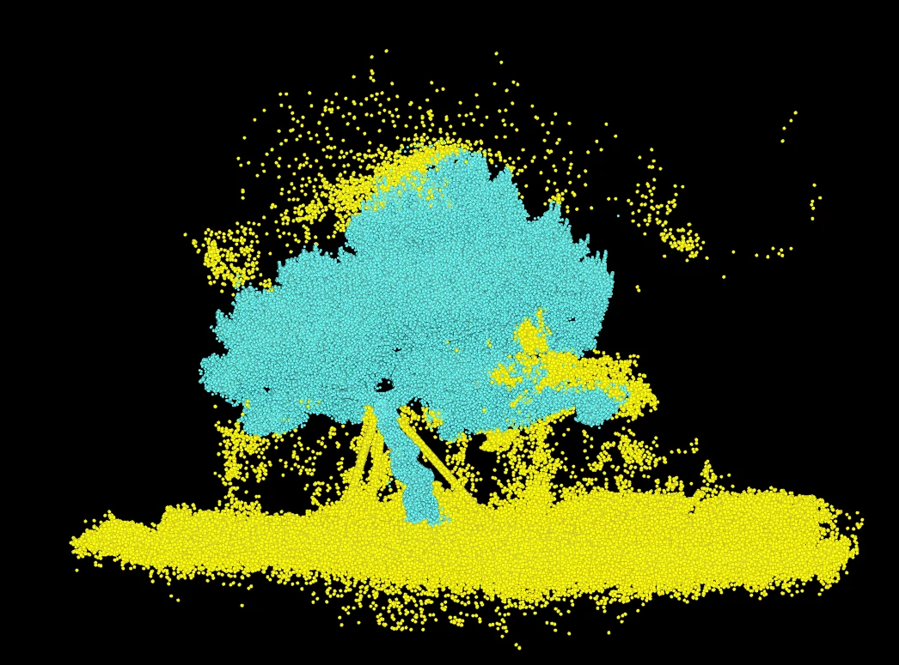
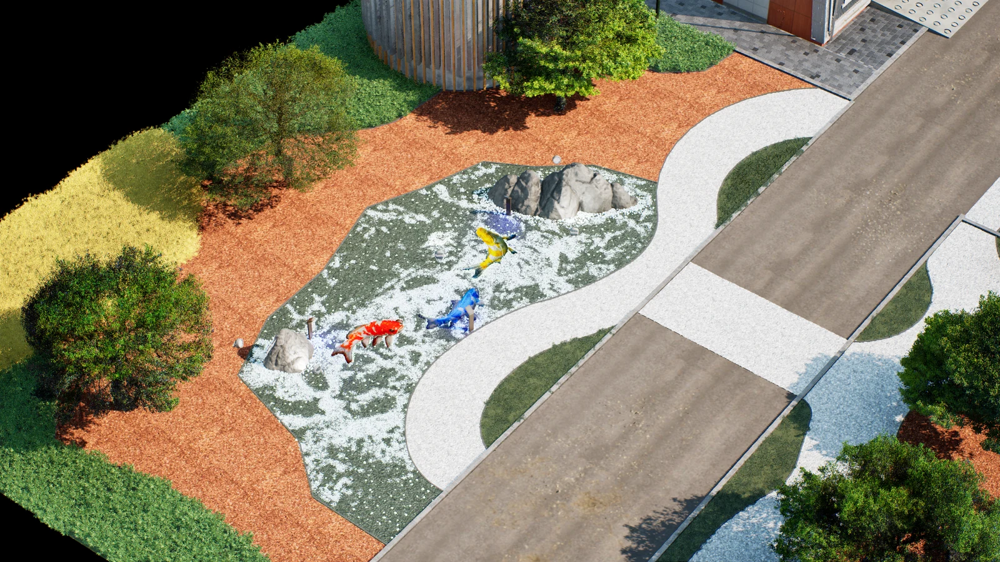
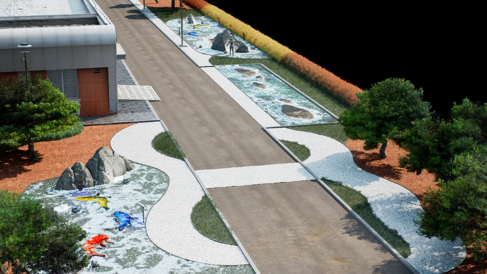

공사 전 A·B·C안을 빠르게 만들어 디자인을 미리 확인한 뒤 전달받은 전개도에 맞춰 발표용 환경 데이터까지 제작했다.
전국에서 고른 소나무 18그루를 직접 촬영해 3DGS로 복원하고 그림자는 별도 메시로 보완했으며 축광석 위 잉어는 흰 부분만 빛나도록 발광을 나눴다.
1. A·B·C안 시각화와 전개도 반영
공사 전에 A·B·C 세 안을 빠르게 환경으로 만들고 실제 공간에서 디자인과 조경이 어떻게 보이는지 확인하며 여러 차례 수정했다.
이후 전달받은 전개도대로 건물과 조경을 제작해 발표에 사용할 데이터로 정리했다.


2. 소나무 18그루 촬영
처음에는 SpeedTree로 소나무를 만들려고 했는데 잎의 모양과 방향을 실제처럼 맞춰야 했고 종류도 다양하게 준비해야 해 고려할 게 많았다. 그래서 실제 나무를 촬영해 3DGS로 복원하기로 했다.
전국에서 고른 소나무 18그루를 DSLR과 드론, Insta360으로 직접 촬영했다.


3. 3DGS 복원과 그림자 보완
COLMAP과 PostShot
촬영한 DSLR과 드론, Insta360 데이터를 COLMAP으로 정리한 뒤 PostShot에서 3DGS로 복원해 Unreal Engine에 가져왔다.


Houdini 포인트 클라우드 정리와 그림자 메시
기존 3DGS 플러그인에서는 그림자가 나오지 않아 Houdini에서 그림자용 포인트 클라우드를 정리했다. 나무만 필요해 색상 필터로 해당 영역을 골랐고 세부 영역은 직접 선택한 뒤 메시로 변환했다. 변환한 메시를 원본과 같은 위치에 맞춰 화면에는 3DGS를 쓰고 그림자는 메시에서 나오도록 했다.


Unreal Engine 배치
3DGS와 그림자용 메시를 같은 위치에 맞춰 조경에 배치하니 소나무 형태는 유지하면서 그림자도 표현할 수 있었다.

4. 식생·PCG 배치와 축광석 발광
소나무 외 식생은 SpeedTree로 만들거나 구매한 에셋을 사용했고 일반 돌은 PCG로 배치했다. 축광석 위 잉어는 흰 부분만 빛나야 해서 별도 발광 구성이 필요했다.
받은 잉어 데이터에서 알파를 만든 뒤 흰 부분만 남긴 알파를 하나 더 만들어 발광에 연결하고 별도 PCG에서 축광석과 잉어의 발광을 따로 제어했다.


제작 결과
A·B·C안으로 공사 전 디자인을 확인하고 전개도에 맞춰 발표용 환경을 만들었다. 소나무는 3DGS로 복원해 그림자를 별도 메시로 보완했으며 축광석 위 잉어는 흰 부분만 빛나도록 발광을 분리했다.

